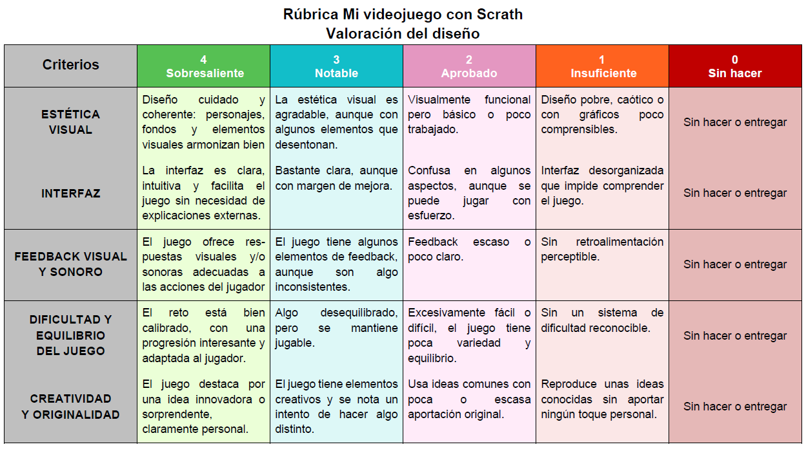
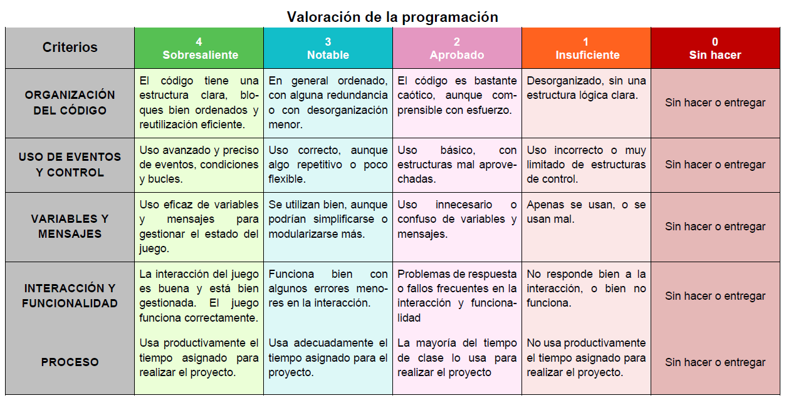

Una vez hemos terminado el videojuego, es momento de pararnos a pensar sobre qué hemos aprendido, con los juegos de Scratch.
Una vez hemos terminado el videojuego, es momento de pararnos a pensar sobre qué hemos aprendido, con los juegos de Scratch.
Espero que te haya quedado más claro cómo se crea y funciona un videojuego y seas capaz de reconocer sus elementos, acciones y características para ser programados con Scratch. De ahora en adelante, reconocerás a qué género pertenecen, los elementos que lo componen, cómo interactúan entre ellos y cómo es la mecánica y dinámica del juego.
El siguiente gráfico te aclarará cómo hemos trabajado la tarea.
![Esquema final con lo que hemos aprendido para realizar nuestro videojuego. Hemos visto las características que tienen y cómo clasificarlos. Hemos analizado cómo funcionan los videojuegos viendo los elementos que los constituyen y cómo programarlos, cómo controlarlos y dotarlos de interactividad, la importancia de las variables para realizar mejoras, y la posibilidad de incluir clones. Hemos visto también el proceso de creación de un videojuego y la importancia del debugging en las buenas prácticas de la programación.](../content/resources/Esquema_final_REA_02.png "Conclusión del REA")
Audio
Autoevaluación: ¿Qué has conseguido con este reto?
%7B%22title%22%3A%22Sobre%20la%20tarea%20final%22%2C%22categories%22%3A%5B%22S%E9%20identificar%20y%20clasificar%20seg%FAn%20su%20g%E9nero%20un%20videojuego%22%2C%22S%E9%20qu%E9%20son%20y%20c%F3mo%20funcionan%20los%20videojuegos%22%2C%22%BFEres%20capaz%20de%20identificar%20los%20diferentes%20elementos%20que%20componen%20el%20juego%3F%22%2C%22%BFHas%20podido%20elaborar%20el%20esquema%20de%20acciones%20del%20juego%3F%22%2C%22%BFHas%20podido%20dar%20interactividad%20a%20los%20elementos%20de%20un%20videojuego%3F%22%2C%22%BFConoces%20los%20usos%20de%20las%20variables%3F%22%2C%22%BFHas%20sido%20capaz%20de%20dise%F1ar%20tu%20propio%20videojuego%3F%22%2C%22S%E9%20cual%20es%20la%20utilidad%20de%20los%20clones%22%2C%22%BFSabes%20explicar%20el%20funcionamiento%20de%20tu%20videojuego%3F%22%2C%22%BFHas%20sido%20capaz%20de%20programar%20tu%20propio%20videojuego%3F%22%2C%22S%E9%20utilizar%20los%20bloques%20de%20control%20y%20sensores%20para%20programar%20la%20interactividad%22%2C%22%BFSabes%20identificar%20y%20corregir%20errores%20en%20un%20videojuego%3F%22%2C%22Preparaci%F3n%20de%20la%20exposici%F3n%22%2C%22Ejecuci%F3n%20de%20la%20exposici%F3n%22%5D%2C%22scores%22%3A%5B%22Excelente%22%2C%22Satisfactorio%22%2C%22Mejorable%22%2C%22Insuficiente%22%5D%2C%22descriptions%22%3A%5B%5B%7B%22text%22%3A%22Lo%20he%20hecho%20de%20manera%20aut%F3noma%22%2C%22weight%22%3A%221%22%7D%2C%7B%22text%22%3A%22La%20he%20hecho%20pero%20he%20necesitado%20ayuda%22%2C%22weight%22%3A%220.75%22%7D%2C%7B%22text%22%3A%22La%20he%20hecho%2C%20pero%20he%20necesitado%20una%20ayuda%20continua%22%2C%22weight%22%3A%220.5%22%7D%2C%7B%22text%22%3A%22No%20he%20podido%20hacerlo%22%2C%22weight%22%3A%220.25%22%7D%5D%2C%5B%7B%22text%22%3A%22Ser%EDa%20capaz%20de%20explicarlo%22%2C%22weight%22%3A%221%22%7D%2C%7B%22text%22%3A%22Lo%20he%20entendido%20y%20sabr%EDa%20explicarlo%20con%20ayuda%22%2C%22weight%22%3A%220.75%22%7D%2C%7B%22text%22%3A%22Lo%20he%20entendido%20pero%20no%20sabr%EDa%20explicarlo%22%2C%22weight%22%3A%220.5%22%7D%2C%7B%22text%22%3A%22No%20lo%20he%20entendido%22%2C%22weight%22%3A%220.25%22%7D%5D%2C%5B%7B%22text%22%3A%22He%20podido%20identificarlos%2C%20sin%20ayuda%22%2C%22weight%22%3A%221%22%7D%2C%7B%22text%22%3A%22He%20podido%20identificarlos%2C%20pero%20con%20algo%20de%20%20ayuda%22%2C%22weight%22%3A%220.75%22%7D%2C%7B%22text%22%3A%22He%20podido%20identificarlos%2C%20pero%20con%20mucha%20ayuda%22%2C%22weight%22%3A%220.5%22%7D%2C%7B%22text%22%3A%22No%20he%20podido%20identificarlos%22%2C%22weight%22%3A%220.25%22%7D%5D%2C%5B%7B%22text%22%3A%22He%20podido%20elaborarlo%2C%20sin%20ayuda%22%2C%22weight%22%3A%221%22%7D%2C%7B%22text%22%3A%22He%20podido%20elaborarlo%2C%20con%20algo%20de%20%20ayuda%22%2C%22weight%22%3A%220.75%22%7D%2C%7B%22text%22%3A%22He%20podido%20elaborarlo%2C%20pero%20con%20mucha%20ayuda%22%2C%22weight%22%3A%220.5%22%7D%2C%7B%22text%22%3A%22No%2C%20he%20podido%20elaborarlo%22%2C%22weight%22%3A%220.25%22%7D%5D%2C%5B%7B%22text%22%3A%22He%20podido%20hacerlo%22%2C%22weight%22%3A%221%22%7D%2C%7B%22text%22%3A%22He%20podido%20hacerlo%2C%20pero%20con%20algo%20de%20%20ayuda%22%2C%22weight%22%3A%220.75%22%7D%2C%7B%22text%22%3A%22He%20podido%20hacerlo%2C%20pero%20con%20mucha%20ayuda%22%2C%22weight%22%3A%220.5%22%7D%2C%7B%22text%22%3A%22No%20he%20podido%20hacerlo%22%2C%22weight%22%3A%220.25%22%7D%5D%2C%5B%7B%22text%22%3A%22Ser%EDa%20capaz%20de%20explicarlo%22%2C%22weight%22%3A%221%22%7D%2C%7B%22text%22%3A%22Lo%20he%20entendido%20y%20sabr%EDa%20explicarlo%2C%20pero%20con%20ayuda%22%2C%22weight%22%3A%220.75%22%7D%2C%7B%22text%22%3A%22Lo%20he%20entendido%20pero%20no%20sabr%EDa%20explicarlo%22%2C%22weight%22%3A%220.5%22%7D%2C%7B%22text%22%3A%22No%20lo%20he%20entendido%22%2C%22weight%22%3A%220.25%22%7D%5D%2C%5B%7B%22text%22%3A%22He%20podido%20hacerlo%22%2C%22weight%22%3A%221%22%7D%2C%7B%22text%22%3A%22He%20podido%20hacerlo%2C%20pero%20con%20algo%20de%20%20ayuda%22%2C%22weight%22%3A%220.75%22%7D%2C%7B%22text%22%3A%22He%20podido%20hacerlo%2C%20pero%20con%20mucha%20ayuda%22%2C%22weight%22%3A%220.5%22%7D%2C%7B%22text%22%3A%22No%20he%20podido%20hacerlo%22%2C%22weight%22%3A%220.25%22%7D%5D%2C%5B%7B%22text%22%3A%22Ser%EDa%20capaz%20de%20explicarlo%22%2C%22weight%22%3A%221%22%7D%2C%7B%22text%22%3A%22Lo%20he%20entendido%20y%20sabr%EDa%20explicarlo%20con%20ayuda%22%2C%22weight%22%3A%220.75%22%7D%2C%7B%22text%22%3A%22Lo%20he%20entendido%20pero%20no%20sabr%EDa%20explicarlo%22%2C%22weight%22%3A%220.50%22%7D%2C%7B%22text%22%3A%22No%20lo%20he%20entendido%22%2C%22weight%22%3A%220.25%22%7D%5D%2C%5B%7B%22text%22%3A%22Ser%EDa%20capaz%20de%20explicarlo%22%2C%22weight%22%3A%221%22%7D%2C%7B%22text%22%3A%22Lo%20he%20entendido%20y%20sabr%EDa%20explicarlo%2C%20pero%20con%20algo%20de%20%20ayuda%22%2C%22weight%22%3A%220.75%22%7D%2C%7B%22text%22%3A%22Lo%20he%20entendido%2C%20pero%20no%20sabr%EDa%20explicarlo%22%2C%22weight%22%3A%220.5%22%7D%2C%7B%22text%22%3A%22No%20he%20podido%20hacerlo%22%2C%22weight%22%3A%220.25%22%7D%5D%2C%5B%7B%22text%22%3A%22He%20podido%20hacerlo%22%2C%22weight%22%3A%221%22%7D%2C%7B%22text%22%3A%22He%20podido%20hacerlo%2C%20pero%20con%20algo%20de%20ayuda%22%2C%22weight%22%3A%220.75%22%7D%2C%7B%22text%22%3A%22He%20podido%20hacerlo%2C%20pero%20con%20mucha%20ayuda%22%2C%22weight%22%3A%220.5%22%7D%2C%7B%22text%22%3A%22No%20he%20podido%20hacerlo%22%2C%22weight%22%3A%220.25%22%7D%5D%2C%5B%7B%22text%22%3A%22Ser%EDa%20capaz%20de%20explicarlo%22%2C%22weight%22%3A%221%22%7D%2C%7B%22text%22%3A%22Lo%20he%20entendido%20y%20sabr%EDa%20explicarlo%20con%20ayuda%22%2C%22weight%22%3A%220.75%22%7D%2C%7B%22text%22%3A%22Lo%20he%20entendido%20pero%20no%20sabr%EDa%20explicarlo%22%2C%22weight%22%3A%220.5%22%7D%2C%7B%22text%22%3A%22No%20lo%20he%20entendido%22%2C%22weight%22%3A%220.25%22%7D%5D%2C%5B%7B%22text%22%3A%22Ser%EDa%20capaz%20de%20explicarlo%22%2C%22weight%22%3A%221%22%7D%2C%7B%22text%22%3A%22Ser%EDa%20capaz%20de%20explicarlo%2C%20pero%20con%20algo%20de%20%20ayuda%22%2C%22weight%22%3A%220.75%22%7D%2C%7B%22text%22%3A%22Lo%20he%20entendido%20pero%20no%20sabr%EDa%20explicarlo%22%2C%22weight%22%3A%220.5%22%7D%2C%7B%22text%22%3A%22No%20lo%20he%20entendido%22%2C%22weight%22%3A%220.25%22%7D%5D%2C%5B%7B%22text%22%3A%22Lo%20he%20hecho%20de%20manera%20aut%F3noma%22%2C%22weight%22%3A%221%22%7D%2C%7B%22text%22%3A%22Lo%20he%20hecho%20pero%20he%20necesitado%20ayuda%22%2C%22weight%22%3A%220.75%22%7D%2C%7B%22text%22%3A%22Lo%20he%20hecho%2C%20pero%20he%20necesitado%20una%20gu%EDa%20continua%22%2C%22weight%22%3A%220.5%22%7D%2C%7B%22text%22%3A%22No%20he%20podido%20hacerlo%22%2C%22weight%22%3A%220.25%22%7D%5D%2C%5B%7B%22text%22%3A%22He%20sido%20capaz%20de%20explicarlo%22%2C%22weight%22%3A%221%22%7D%2C%7B%22text%22%3A%22He%20sido%20capaz%20de%20explicarlo%20con%20ayuda%22%2C%22weight%22%3A%220.75%22%7D%2C%7B%22text%22%3A%22Lo%20he%20explicado%20con%20ayuda%20continua%22%2C%22weight%22%3A%220.5%22%7D%2C%7B%22text%22%3A%22No%20he%20sido%20capaz%20de%20explicarlo%22%2C%22weight%22%3A%220.25%22%7D%5D%5D%2C%22i18n%22%3A%7B%22activity%22%3A%22Actividad%22%2C%22name%22%3A%22Nombre%22%2C%22date%22%3A%22Fecha%22%2C%22score%22%3A%22Puntuaci%F3n%22%2C%22notes%22%3A%22Notas%22%2C%22reset%22%3A%22Reiniciar%22%2C%22print%22%3A%22Imprimir%22%2C%22apply%22%3A%22Aplicar%22%2C%22newWindow%22%3A%22Ventana%20nueva%22%7D%7D
- Actividad
- Nombre
- Fecha
- Puntuación
- Notas
- Reiniciar
- Imprimir
- Aplicar
- Ventana nueva
| Excelente | Satisfactorio | Mejorable | Insuficiente | |
|---|---|---|---|---|
| Sé identificar y clasificar según su género un videojuego | Lo he hecho de manera autónoma (1) | La he hecho pero he necesitado ayuda (0.75) | La he hecho, pero he necesitado una ayuda continua (0.5) | No he podido hacerlo (0.25) |
| Sé qué son y cómo funcionan los videojuegos | Sería capaz de explicarlo (1) | Lo he entendido y sabría explicarlo con ayuda (0.75) | Lo he entendido pero no sabría explicarlo (0.5) | No lo he entendido (0.25) |
| ¿Eres capaz de identificar los diferentes elementos que componen el juego? | He podido identificarlos, sin ayuda (1) | He podido identificarlos, pero con algo de ayuda (0.75) | He podido identificarlos, pero con mucha ayuda (0.5) | No he podido identificarlos (0.25) |
| ¿Has podido elaborar el esquema de acciones del juego? | He podido elaborarlo, sin ayuda (1) | He podido elaborarlo, con algo de ayuda (0.75) | He podido elaborarlo, pero con mucha ayuda (0.5) | No, he podido elaborarlo (0.25) |
| ¿Has podido dar interactividad a los elementos de un videojuego? | He podido hacerlo (1) | He podido hacerlo, pero con algo de ayuda (0.75) | He podido hacerlo, pero con mucha ayuda (0.5) | No he podido hacerlo (0.25) |
| ¿Conoces los usos de las variables? | Sería capaz de explicarlo (1) | Lo he entendido y sabría explicarlo, pero con ayuda (0.75) | Lo he entendido pero no sabría explicarlo (0.5) | No lo he entendido (0.25) |
| ¿Has sido capaz de diseñar tu propio videojuego? | He podido hacerlo (1) | He podido hacerlo, pero con algo de ayuda (0.75) | He podido hacerlo, pero con mucha ayuda (0.5) | No he podido hacerlo (0.25) |
| Sé cual es la utilidad de los clones | Sería capaz de explicarlo (1) | Lo he entendido y sabría explicarlo con ayuda (0.75) | Lo he entendido pero no sabría explicarlo (0.50) | No lo he entendido (0.25) |
| ¿Sabes explicar el funcionamiento de tu videojuego? | Sería capaz de explicarlo (1) | Lo he entendido y sabría explicarlo, pero con algo de ayuda (0.75) | Lo he entendido, pero no sabría explicarlo (0.5) | No he podido hacerlo (0.25) |
| ¿Has sido capaz de programar tu propio videojuego? | He podido hacerlo (1) | He podido hacerlo, pero con algo de ayuda (0.75) | He podido hacerlo, pero con mucha ayuda (0.5) | No he podido hacerlo (0.25) |
| Sé utilizar los bloques de control y sensores para programar la interactividad | Sería capaz de explicarlo (1) | Lo he entendido y sabría explicarlo con ayuda (0.75) | Lo he entendido pero no sabría explicarlo (0.5) | No lo he entendido (0.25) |
| ¿Sabes identificar y corregir errores en un videojuego? | Sería capaz de explicarlo (1) | Sería capaz de explicarlo, pero con algo de ayuda (0.75) | Lo he entendido pero no sabría explicarlo (0.5) | No lo he entendido (0.25) |
| Preparación de la exposición | Lo he hecho de manera autónoma (1) | Lo he hecho pero he necesitado ayuda (0.75) | Lo he hecho, pero he necesitado una guía continua (0.5) | No he podido hacerlo (0.25) |
| Ejecución de la exposición | He sido capaz de explicarlo (1) | He sido capaz de explicarlo con ayuda (0.75) | Lo he explicado con ayuda continua (0.5) | No he sido capaz de explicarlo (0.25) |
Rúbrica del proyecto


Hemos completado este reto.
¡Enhorabuena por el trabajo realizado!
Ha sido un honor acompañarte durante estas sesiones de trabajo que hemos compartido juntos.